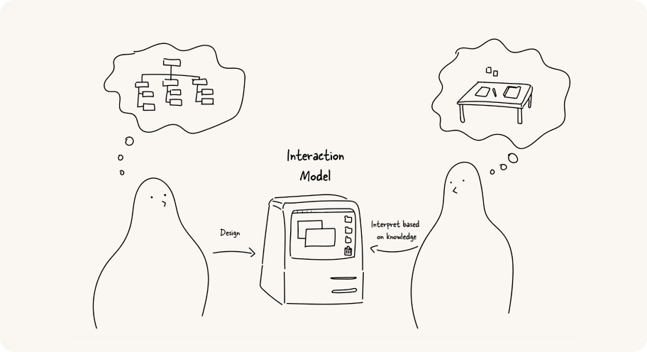
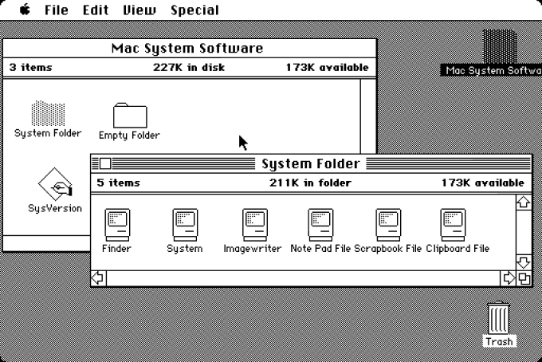
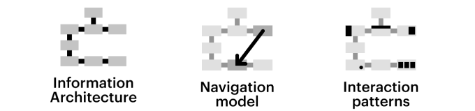

What is an interaction model?
An interaction model connects what the user already knows and understands from a similar experience (mental model) to features of a product or service, to create a high-level overview of how the user engages in the experience over time.

A designer x An interaction Model x A user: How an interaction model bridges between the designer’s conceptual model and user’s mental model
Interaction models can be applied to both small and large scales.
For instance, an interaction model might get into the details of how a user adjusts the settings on a single product, or it might show how the user navigates multiple apps to access various services.
If an interaction model is done well, it provides the user good learnability and predictability and helps them understand how to act and move to the right place to achieve their objectives.
The other benefit of creating an interaction model as a tool is that it helps designers to communicate how the user research findings are and will be related to the digital product creation.
It enables designers, developers, stakeholders and/or clients to understand and explain how users navigate from objects to actions within a system.
A sample interaction model
An interaction model connects what the user already knows and understands from a similar experience (mental model) to features of a product or service, to create a high-level overview of how the user engages in the experience over time.

System 1: the first version of Apple Macintosh OS — Apple, 1984
Let's look at one of the most famous interaction models: the desktop metaphor that was introduced through the Apple Macintosh in 1984.
Instead of interacting via esoteric text-based commands as most computers back then, Apple represented everything as items on the visual equivalent of your physical workspace—the desktop. You create and open files, which can then be stored in folders, and applications like the calculator looked like their real-world counterpart. You can move and arrange all these elements around as you would things on your actual desktop.
The model has evolved over time, adding more abstracted user interface elements like the dock, but the core model has remained until now and help users access and navigate the functionalities.
Like the desktop interaction model example, a good interaction model helps the user generate a mental model of the product. Mental models are users' underlying expectations about how something should work. It's formed based on what they already do, prior experiences with similar products, or assumptions they've made on how it would appear.
Even if most drivers don't know how the engine actually works, they have in mind what the car is capable of doing and how to drive. “Insert car keys, holding a handle, and hit the pedal!”
That's why even complicated systems make sense without deeply thinking about how the system actually works. That's why, again, the desktop interaction model helps us use the computer more intuitively because its functions are similar enough to a real desk that people can make a guess on how to use it.
Of course, there is no one-size-fits-all interaction model. Every product or project solves different problems and challenges for different users, and thus, requires an interaction model that reflects and supports their real-world interactions as much as possible.
In context to information architecture, navigation model, or interaction patterns

Do you agree with these diagrams explaining the definition of IA, Navi model, and Interaction patterns?
An information architecture maps the relationships between content. But as we create complex Web portals, apps or systems, we are not just structuring content. We are defining the way users move through a system consisting of many complex elements and how they use them to perform various transactions.
An interaction model is also much more than just a navigation model that describes the path users can move from one page or section of an application to another. Of course, an interaction model must take a product’s navigation model into account. Certainly, we need to be aware of the relationships between an application’s pages. But an interaction model also describes how users navigate to a page. Are they just following links that go deeper and deeper into a tree structure? Are the sections effectively just screens arranged as vertical or horizontal tabs? Or are the sections arranged in a 2d plane, where swiping horizontally moves the user to the next section and swiping vertically elaborates on that section? Perhaps the content is interlinked non-linearly like a neural network, using subject tags, and there are many entry and exit points for any given item? Or it’s a combination of any of the above?
Beyond navigation, an interaction model would also describe how they select an object of interest on the page—for example, a book, a passenger, or an expense--and how they act on that object—purchasing it, booking an itinerary for it, or adding it up. Are they represented as a list? A photo on a grid? A post-it on a kanban? How does the user open up the object and configure the details? Can they select a bunch and add them to a cart? Can they move them to another location?
There’s no need to reinvent the wheel every time we consider navigation and interactions, as there are common interaction design patterns that users have become familiar with, such as the 2 pane layout (think Outlook--your mail as a list on the left pane, the mail contents on the right), the screen-after-screen drill-down navigation that most mobile apps are based on, a list of items that can be viewed as a list or grid and sorted and/or filtered, or you know even just a linear form. Boring, but effective in the sense that the majority of users just know how they work. Of course, there might be digital products that require completely novel navigation and interaction. Those tend to be fun, and challenging.
Role of user research in creating mental models
We need to stress the importance of the user research identifying the common patterns of users such as how they conceptualise their goals. We mentioned that a good interaction model helps users generate a mental model. However, the individual's mental model will constantly evolve and be subject to change. It’s affected by various factors like new experiences with new products or new technologies. For example, the mental model for driving manual stick cars and driverless cars in near future will be quite different. In addition, depending on the goals of an experience, you might adjust your model to reduce (or increase) friction, to encourage interaction, or elicit joy or some other emotional response from the user.
Sweet. You just identified the common patterns in your customers.
That’s why user research is the core and fundamental activity to create an interaction model. While mental models are unique to each individual, you’ll be able to uncover common patterns in your customers. Identifying these at the start of your project will increase your chances of designing a good interaction model:
- Metaphors: THIS works like THAT. “Your computer works like your desk.” With products that have abstract digital behaviour, applying a metaphor can make the product more physical, and thus more understandable. A folder is more physical than a directory. Clubhouse, an app which has influenced many platforms such as Twitter's Space and Spotify's Greenroom, is designed with an interaction model that is inspired by the stage metaphor. Only those who speak or perform can come up to the top of the page, just like climbing up a stage to deliver a performance. And you need to have an invitation to become a member too.
- Structure: Sometimes this is a matter of information hierarchy: arranging content to help users understand and find things they need. Apple’s Store page is a good example. Firstly, it provides thumbnails of hard categories that customers commonly use to explore. After that, it uses large size photos for new and featured products to attract customers who may just be browsing. Finally, the page uses an even larger image of a staff member to direct customers to guided-one-on-one shopping assistance, if they still can't find what to do or buy.
- A through-line: A through-line is figuring out the likely pathways through the device. A user will do A, then B, then C. Any model should work well for that A-B-C pathway. Let's imagine the COVID-19 ends soon, and you'll fly next month so that you bought a flight ticket. The flight schedule is automatically updated to your calendar app and gives you a notification in advance. When you arrived the airport, the app notifies you with a CTA to open the ticket through the wallet app to show to the flight attendance. This is one of through-line example.